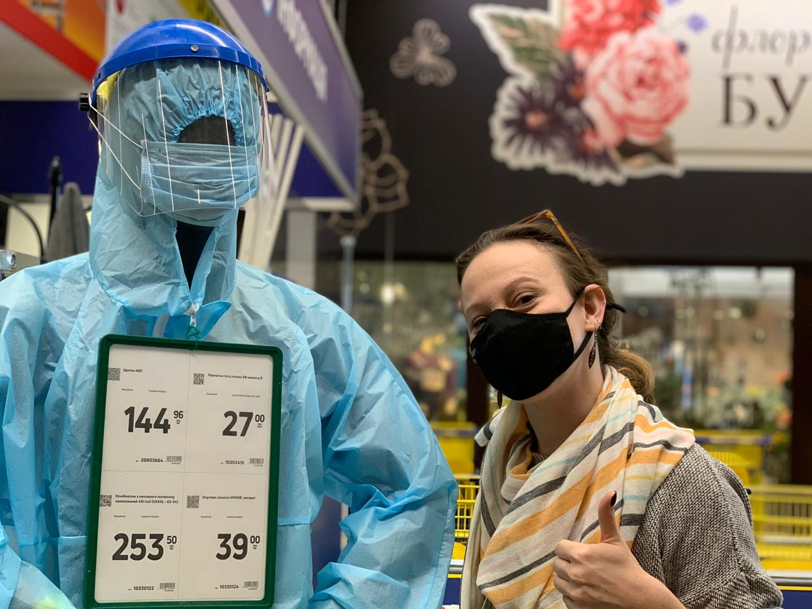
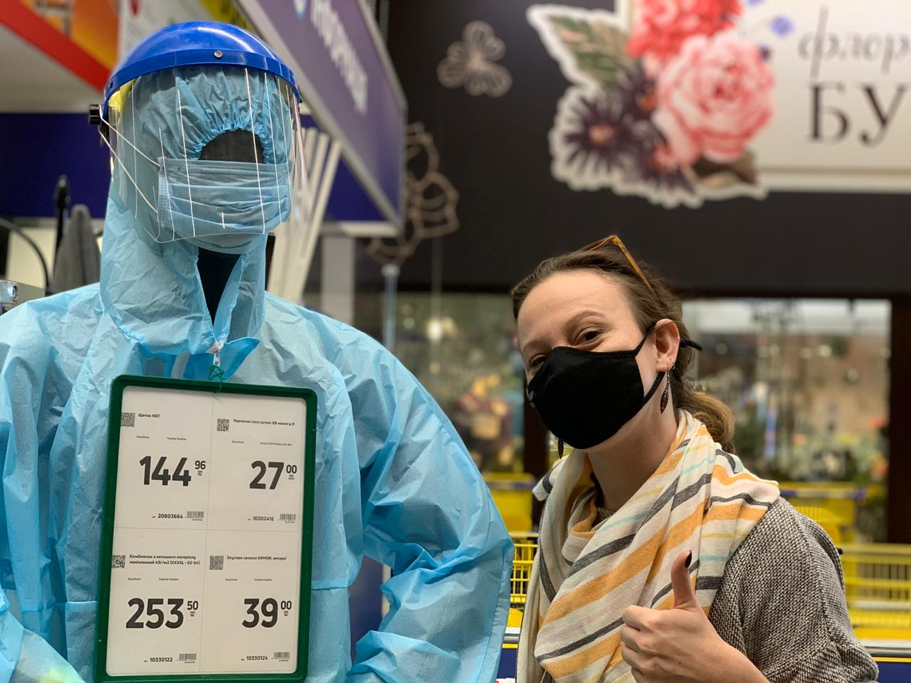

My interests lie at the intersection of governance and technology. Currently I am a student of cybersecurity looking for the best place to use my experience with IT in “GovTech” after I finish my degree. I invite you to use this page to explore my credentials and past work as well as to showcase visually the differences in voting and campaigning environments all over the world from snapshots from humanitarian work on four continents.
